Our project aims to create photorealistic renders of soap bubbles. To accomplish this, we created a custom
thin-film BSDF to model the local surface interactions that cause iridescence. We also, through building support
for the BSDF, implemented specular/viewer-dependent BSDFs in the path tracer and used perlin noise and
gravity-based thickness to visually approximate fluid movement. Our approach produces bubbles with iridescent
highlights only available through the physics of thin-film interference.
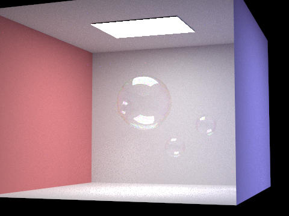
Technical Approach
Understanding thin film interference
The constructive and destructive patterns of thin film interference are caused by the phase difference between
the light ray from direct reflection and the light ray going through a material with different refractive index
and reflected on the other side of the thin film. The light incurs a \(\pi\) phase shift when it reflects on the
side with a lower refractive index, but no phase shift when on the side with a higher refractive index. In the
diagram below, since the refractive index of air is 1 and the thin film of the soap bubble has an index greater
than 1, when the light directly bounces off into the air, there is a \(\pi\) phase shift in path 1. However, in
the light path 2 where the light enters the thin film and bounces off inside the thin film, there is no phase
shift. Therefore, we have the formulae for interference patterns
\[
\begin{align*}
2n_2t\cos\theta_t &= (m-\frac{1}{2})\lambda\quad & \textrm{for constructive interference,} \\
2n_2t\cos\theta_t &= m\lambda\quad & \textrm{for destructive interference.}
\end{align*}
\]
We call \(2n_2t\cos\theta_t\) the optical path difference (OPD). Light components of different wavelengths have
different \(\theta_t\) as well.
Let \(\Delta\phi\) be the phase difference between two reflected light rays, the intensity of the partial
interference is given by
\[
\begin{align*}
I=4I_0\cos^2\frac{\Delta\phi}{2}.
\end{align*}
\]
The phase difference caused by OPD is \(\frac{2\pi}{\lambda}\cdot\mathrm{OPD}\). For the thin film interference,
\(\Delta\phi=\Delta\phi_{\mathrm{OPD}}+\Delta\phi_{\mathrm{geometry}}\).
In the pathtracer we implemented in Homework 3, the radiance terms \(L_i\) and \(L_o\) are represented as
Vector3D objects with components in RGB. Since we can look up the wavelengths of the RGB
light used in the color scheme and their refractive indices in different materials, it is possible for us to
modify the intensity of each component in those terms at every intersection based on the phase difference.
The physical plausible rendering of thin film interference in our program requires understanding and
implementing BSDF for specular and glossy reflections. The diffuse BSDF in homework 3 would create chaotic
interference patterns that cancel out each other from the viewer’s perspective.
In order to sample BSDF, we have to be able to compute the reflection and transmission components of light. One
immediate challenge is that the light can bounce multiple times between the two interfaces of the thin film before
reflecting back to the original side or transmitting to the opposite side. However, by Fresnel’s equation, the
coefficients $r_s, t_s, r_p, t_p$ remain the same for every bounce at the same interface. Since the optical path
difference (and thus the phase difference) between two neighboring bounces, and the factor by which the amplitude
decreases are the same, we can use the complex library in C++ to complete two complex geometric series, one for
reflection and one for transmission. By taking the norms, we factor in how the phase shifts affect the amplitude,
and thus accounting for the constructive and destructive interferences.
Extending Homework 3 with specular reflections and refractions
We needed to update Homework 3 to work with specular reflection and refraction, as we only used a diffuse BSDF
in the original assignment. This required adding support for sampling from discrete distributions for light
direction, since reflectance and refraction both only send light in one direction; in other words, their “pdf"
is a dirac delta function \(\delta(\omega_o - R)\). In practice, it means removing lambertian cosine factor if the
light has a discrete range of incoming light directions, and removing one bounce lighting at those surfaces
since that light may not be in the range of sampling spheres. Below is a comparison of the naïve original
solution from the end of homework 3 and correct implementations.
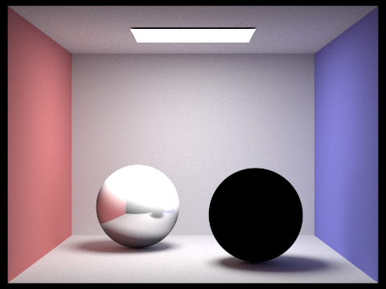
Incorrect with direct + lambertian
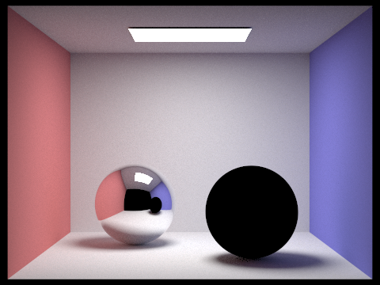
Correct without direct or lambertian
Other than the math for implementing Snell’s law and accounting for total internal reflection, implementing Schlick’s
approximation was the most interesting part (and took the longest to debug). It simply states that a
simple and fast approximation of the Fresnel equations is
\[
F_r = R_0 + (1-R_0)*(1-\cos^5(\theta_i))
\]
\[
R_0 = (\frac{\eta_i - \eta_o}{\eta_i + \eta_o})^2
\]
where we can replace \(\theta_i\) with \(\theta_o\) since the cosine of the reflected angle should stay the
same. We also found an interesting
variant of Schlick’s approximation that we will look into as well. We use Schlick’s approximation to
estimate the Fresnel coefficient, and, weighting a random selection by the coefficient, either transmit or
reflect the ray.
The CMU version of
the assignment was incredibly helpful in figuring all of these modifications out. It also pointed out
that refraction focuses or defocuses a larger solid angle onto an area, which turns out to be the square of
the ratio of the index of refractions. Here are some reflections, refractions, and a mix of both
(glass):
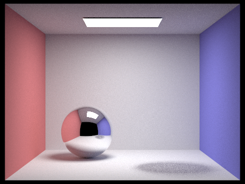
Refraction with IoR = 1 Invisible, since light passes through
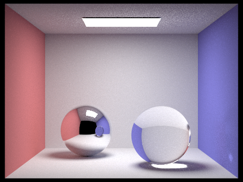
Refraction with IoR = 1.5 Doesn't correspond to any real object
Glass (reflection + refraction) with IoR = 1
Glass (reflection + refraction) with IoR = 1.5
Getting a Bubble Scene (COLLADA)
Modifying COLLADA (.dae) Files
The original COLLADA files from HW3 didn’t have the proper attributes that thin-film objects needed in order to be
rendered correctly. We added the following attributes to our COLLADA effect for thin-film object:
transmittance, reflectance, roughness, ior (index of
refraction), thickness_nm.
transmittance: (1, 1, 1) Allows for light to pass through the object
reflectance: (1, 1, 1) Allows for incident light to be reflected
roughness: 0.0 Allows for perfect mirror reflections
ior: 1.33 Accurately represents the index of refraction of a soap bubble
thickness_nm: 100-700 Determines the mean thickness of the thin-film of the object
Editing COLLADA parsing
We also modified the COLLADA parsing (collada.cpp) to add support for our thin-film material. This
largely consisted of adding thickness, roughness, reflectance albedo, transmittance albedo, and index of
refraction parsing under a <thin_film> XML tag and passing those into the BSDF.
Problems and Solutions with Thin-film BSDF
Lack of Iridescence Due to Uniform Thickness
Varying Thickness implementation:
The model we have implemented so far has been able to simulate the looks of thin film spheres. In particular, if we
set the refractive index to \(n=1.33\), the IOR of water, we are able to render plausible pictures with the “bubbly”
features. However, since the thickness of the thin film is fixed, we are only able to observe noticeable light hues
around the edge of the bubble. There are two possible explanations for the current limitation:
Our model oversimplifies the light to only its RGB components at wavelengths \(620nm\), \(550 nm\), and \(460
nm\). Although most of the perceivable colors can be expressed as a metamer of certain compositions of RGB
components, thin film interference and human perceptions of color are not structure-preserving morphisms (for a
map
\(f:S_1\to S_2\) and \(x,y\in S_1\), the property \(f(x+y)=f(x)+f(y)\) is seldom satisfied). Therefore, by
limiting
the model to only three different wavelengths, we did an oversimplification by removing most of the light
spectra,
thus reducing the potential iridescence of the rendered pictures.
The uniform thickness of our spheres limits the extent of thin-film interference. We observe that depending on
the thickness, our bubbles usually take on only a specific hue, either tinted by red for thick bubbles or blue
for
thin ones, rather than realistic bubbles under sunlight with swirling rainbow color bands. The gentle hue
produced
by the thin film interference is also most noticeable around the edges where the angle of incidence is the
largest,
where Fresnel reflection is strongest and the path difference through the film is greatest, making interference
colors most visible.
In order to address the first problem, we would have to create a spectrum path tracer that effectively samples
across the whole spectrum of the visible light. Even though our thin-film BSDF supports different wavelength inputs,
how to sample effectively and how to integrate over the light spectrum to compute luminance is still a hefty task.
In addition, even for only a few primitives that are simple geometries, our model already takes quite some time to
run. If we sample more channels, the task will soon become too computationally intensive for pathtracers based on
CPU.
In our program we try to tackle the second problem. To introduce this variation in thickness, one might be tempted
to use a simple linear model, assuming thickness is proportional to height due to gravity. However, we can recall
from physics classes that the fluid mechanics are described by Navier-Stokes equations, a set of nonlinear partial
differential equations. Full Navier–Stokes equations can exhibit chaotic behavior and strange attractors under
certain conditions. The famous Lorenz equations are a reduced, three-variable model of this PDE system and are
well-known for making such strange attractors visually clear. Our problem requires an even more complex version of
Navier-Stokes equations since in thin films, surface tension is significant. A direct numerical simulation of the
film's fluid dynamics is, therefore, computationally infeasible for our purposes. Rather than trying to find
numerical solutions to such a complicated PDE system, we recall that in cosmology and meteorology, Perlin noises are
frequently used to generate realistic-looking galaxies and tornadoes. Unlike random noises generated by the Mersenne
twister method in our pixel sampling function, Perlin noises are smooth, making them a good fit to create chaotic
but continuous patterns on bubble thickness.
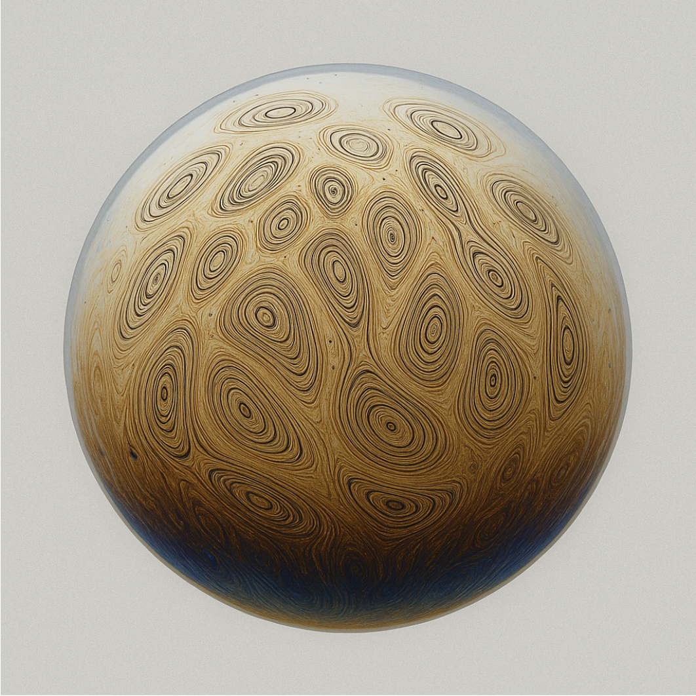
Realistic bubble with strange attractors based on Navier Stokes equations
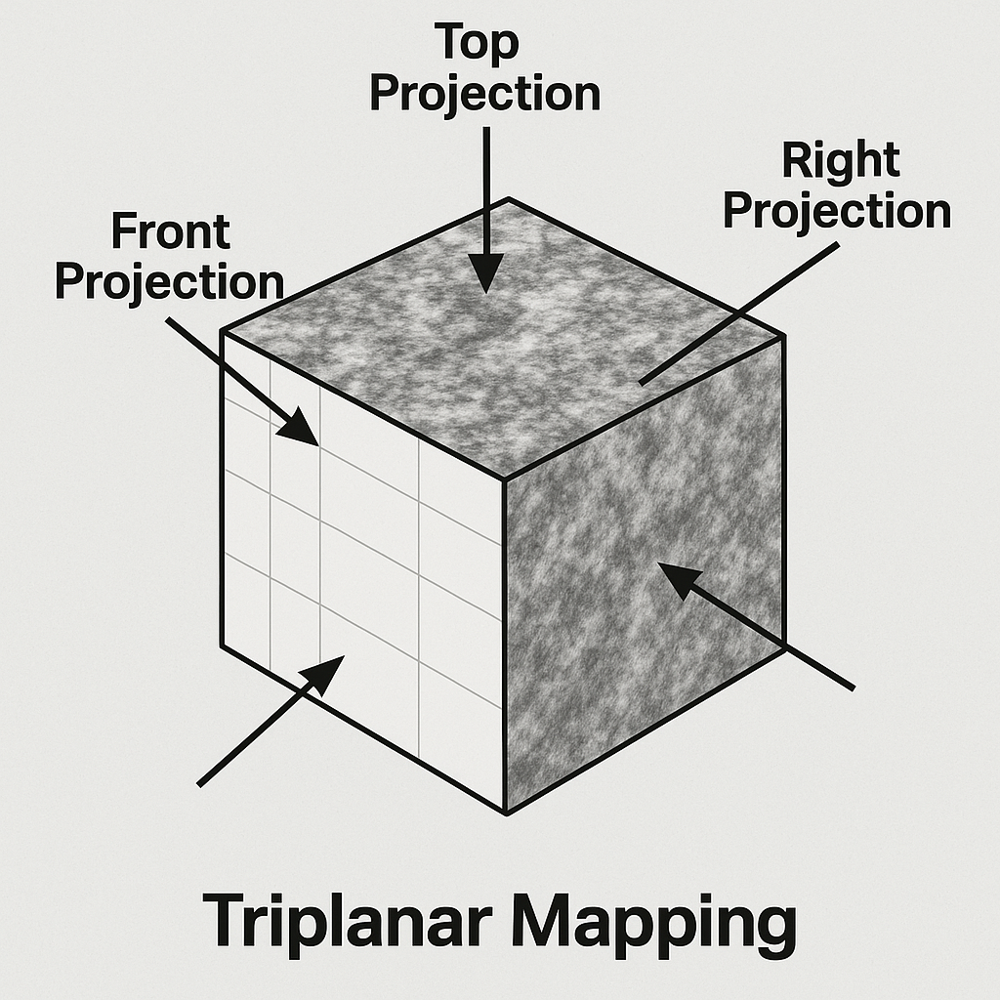
Triplanar projection in Perlin Noise
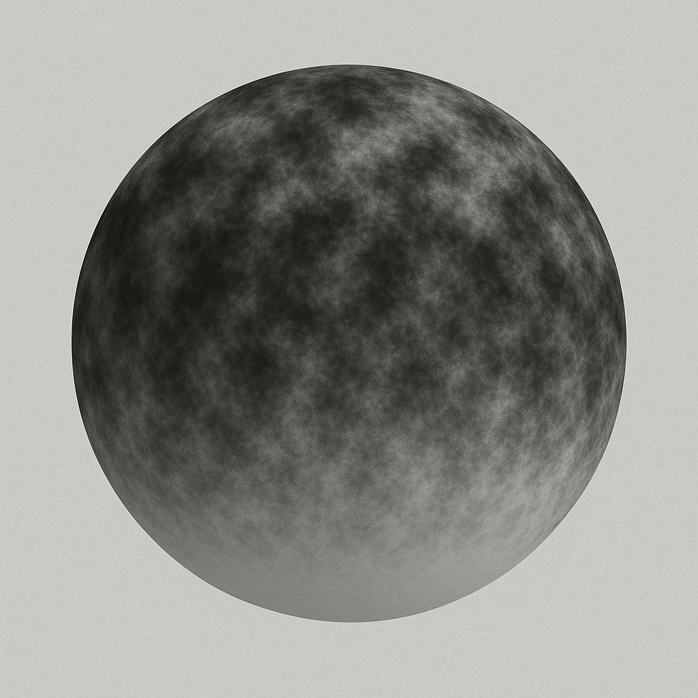
Perlin noise density map
Images generated by GPT-5
With the help of generative AI, we were able to implement random thickness on our bubbles that look natural (various
implementations of Perlin noises are available through many different open-source C++ libraries as well). To model
realistic variations, our implementation uses a multi-octave Perlin noise function to generate multi-frequency 3D
noises and uses tri-planar projections to map the noise onto the surface. In addition, we can introduce gravity bias
such that the bubbles are thicker near the bottom. By combining a base thickness with this procedurally generated,
gravity-influenced variation, we are able to recreate more colors of thin film interference on a single bubble.
Direct Lighting with Thin-Film materials
Direct lighting gets a little more interesting with semi-transparent materials, such as our thin-film bubbles. When
the one bounce ray from a diffuse material importance samples in the light direction, it will usually check if there
is a piece of geometry blocking it, and if there is it won’t count any contribution in that direction. However, with
transparent geometry, we get incorrect shadows even when some light should pass through. Therefore, our approach
adds a thin-film visibility component to all direct lighting contributions. If the shadow ray intersects an object
and it is a translucent material, we do another bounce for the transmitted ray only, multiplying the total
visibility by the transmission percentage given by the fresnel equations and the effects of thin-film interference.
We repeat until we reach an opaque material, which means the point is in shadow, or the light, in which case we
multiply the emission by our computed total visibility.
Results
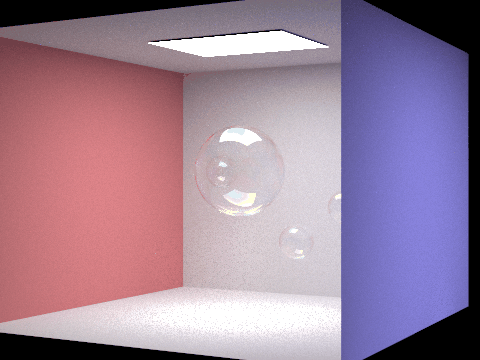
Rotating around bubble. GIF compresses colors, see images for better detail.
Individual images of rotating views
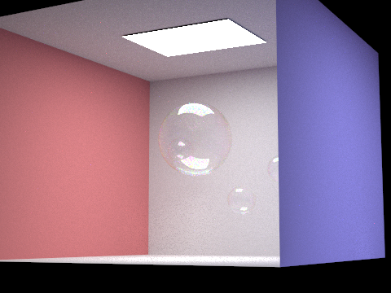
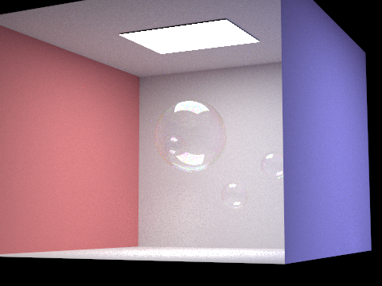
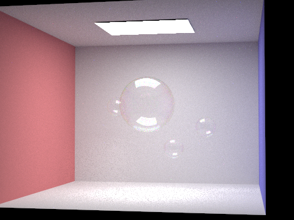
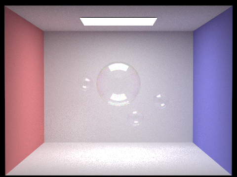
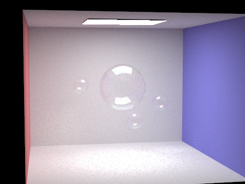
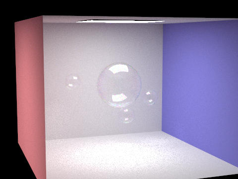
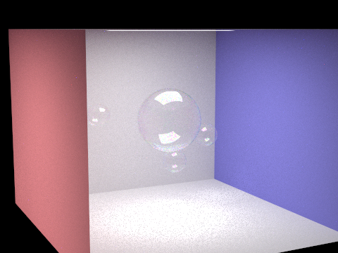
Comparision of different thickness variations
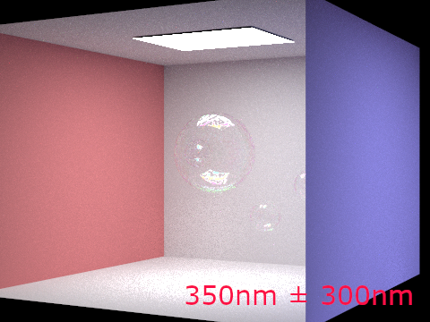
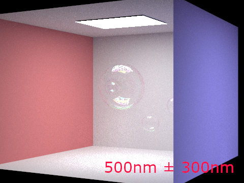
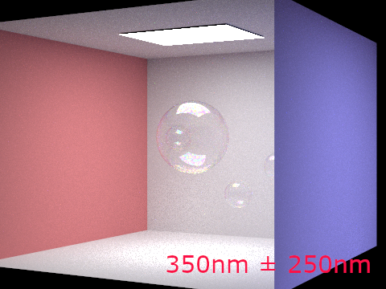
Start versus end
HW3 renderer; almost nothing implemented
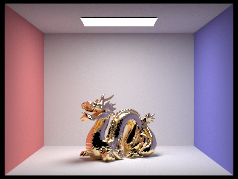
A dragon rendered with view-dependent BSDFs; ~1/3 way through project
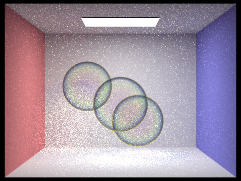
Early bubble renders; ~2/3 way through project
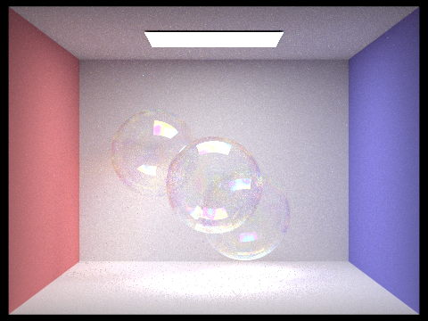
Fiddling with settings to make it look right; almost done with project